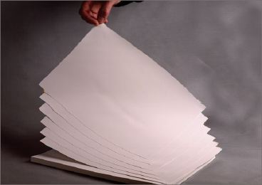
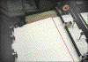

ELEKTROSTATISCHE AUFLADUNG
|
Man spricht von einer statischen Aufladung,
wenn sich an der Oberfläche eines Körpers
Atome mit Elektronenmangel - positive Aufladung -
oder Elektronenüberschuss - negative Aufladung
- befinden. Bei Metallen, also elektrisch
leitfähigem Material, können sich die
Ladungen beliebig bewegen und demzufolge auch
abfließen. Bei Nichtleitern, bleiben die
Ladungen unbeweglich auf der Oberfläche
sitzen, so dass letztere damit statisch aufgeladen
ist (Abb. 1). Eine statische Aufladung des Papiers
kann bei allen Druckverfahren zu Störungen im
Druckprozess führen.
|

|
Abb. 1: Aneinanderhaftende Bogen aufgrund
statischer Aufladung.
|
|
|
|
Mögliche Ursachen:
|
|

|
|
Abb. 2: Schräg einlaufender Bogen in die
Druckmaschine.
|
|
|
|
|
|
Abb. 3: Gestörtes Schriftbild durch
Elektrostatik.
|
|
|
|
|
|
Abb. 4: Gestörtes Schriftbild durch
Elektrostatik.
|
|
|
|

|
|
|
|
|
|

|
|
|
|
|
|

|
|
|
|
|
|

|
|
|
|
|
|

|
|
|
|
|
|
|
In der Papiermaschine tritt Reibung der Papierbahn an Leit-,
Umlenk- und Glattstreichwalzen auf, ebenso auch in Umroll-
und Rollenschneidmaschinen, sowie in besonders starkem
Maße im Maschinenglättwerk bzw. im
Satinierkalander. Zwar fließt ein großer Teil
der entstehenden Aufladungen über die gut leitenden
Metallteile der Maschinen wieder ab oder man trifft
besondere Maßnahmen, um entstandene Aufladungen wieder
zu beseitigen, dies jedoch nicht immer mit dem
gewünschten Erfolg.
Aber auch beim Druckprozess finden sich Stellen, wo die
Papierbahn oder der Papierbogen einer Reibung ausgesetzt
ist. Auch hier sind Leitwalzen die Urheber, besonders wenn
sie infolge hoher Lagerreibung mit der Papierbahn nicht
richtig mitlaufen oder wenn sie mit Gummi oder Kunststoff
überzogen sind und die statische Aufladung wegen ihrer
hohen lsolationswirkung nicht abfließen lassen.
Papier ist als „Halbleiter" anzusehen. Seine
Leitfähigkeit steigt in dem Maße, wie Wasser im
Papiergefüge gebunden ist, so dass bei genügender
Feuchtigkeit ein Abfließen der eventuell auftretenden
statischen Elektrizität, sei es bei der
Papierherstellung oder beim Durchlauf durch die
Druckmaschine, erfolgen kann.
Zu trocken gelieferte Papiere bzw. eine Austrocknung beim
Druckprozess fördern die statische Aufladung durch
Verminderung der Leitfähigkeit. Eine genügend hohe
Stapelfeuchtigkeit von mindestens 40 % rel. Feuchte und eine
genügend hohe relative Luftfeuchtigkeit von über
50 % Raumfeuchte sollten eingehalten werden, um das
Entstehen statischer Aufladung zu verhindern bzw. beim
Durchlauf durch die Druckmaschine durch Reibung entstehende
statische Aufladung schneller abfließen zu lassen.
|
Mögliche Abhilfen:
|
|
Bei einem optimalen Feuchtigkeitsgehalt des Papiers -
Gleichgewichtsfeuchte im Stapel zwischen 45 % und 55 % -
sind keine Schwierigkeiten beim Trennen der Bogen im
Anlagestapel oder auf dem Anlegetisch zu erwarten. Beim
Rotationstiefdruck wird aus Gründen einer
möglichst geringen Querschrumpfung der Papierbahn und
beim Rollenoffsetdruck zur Vermeidung von Blasenbildung
(siehe dort) meist eine verhältnismäßig
niedrige Papierfeuchtigkeit von ca. 35 % rel. Feuchte bis 40
% rel. Feuchte verlangt. Durch entsprechende
maschinentechnische Maßnahmen, Vermeidung von Reibung,
Ausschließen von kunststoffbezogenen Leitwalzen,
Einbau von Entelektrisierungsgeräten,
Konditioniereinrichtungen usw. muss dafür Sorge
getragen werden, dass statische Aufladung nicht
übermäßig auftritt. Eine Klimatisierung bzw.
zumindest eine Befeuchtung der Arbeitsräume im Bereich
von 50 % bis 55 % rel. Luftfeuchte trägt wesentlich
dazu bei, die Gefahr der statischen Aufladung zu beseitigen
bzw. zu vermindern.
In unklimatisierten Arbeitsräumen treten
Arbeitsstörungen in verstärktem Maße in den
Wintermonaten auf, denn bekanntlich lässt eine
Erwärmung der kalten Außenluft die relative
Luftfeuchte sehr stark absinken. Ohne zusätzliche
Befeuchtung können in der kalten Jahreszeit in
geheizten Räumen Feuchtigkeitswerte von 20 % rel.
Feuchte bis 30 % rel. Feuchte beobachtet werden.
Ähnlich wie unter solchen Bedingungen
Passerdifferenzen, Rollneigung und Wellenbildung sowie
übermäßiges Stauben zu erwarten sind,
dürften auch Arbeitsstörungen wegen elektrischer
Aufladung kaum zu vermeiden sein.
Mit meist auf die Dauer geringem Erfolg wurde in der Praxis
eine Vielzahl von Methoden angewandt, um statische Aufladung
des Papiers zu vermeiden bzw. zu beseitigen. Zum Beispiel:
Anbringen von geerdeten Metalldrähten oder -ketten
über der Papierbahn bzw. der Bogenanlage, lonisierung
der Luft durch radioaktive Präparate, offene
Gasflammen, Röntgenstrahlen und Ultraviolettstrahlung.
Diese Methoden blieben wegen der Gefährlichkeit, der
Kostspieligkeit und der verhältnismäßig
geringen Wirkung ohne praktische Bedeutung. In der Praxis
haben sich zur Vermeidung bzw. Beseitigung statischer
Aufladungen Entelektrisierungsgeräte renommierter
Firmen sehr gut bewährt. Diese lonisierungsgeräte
bewirken eine Erhöhung der Leitfähigkeit der Luft
und verhindern somit den Aufbau statischer Ladung, indem sie
diese sofort wieder abfließen lassen. Die Lieferanten
von auf dem Markt eingeführten Geräten können
auch Hinweise geben, an welcher Stelle der Druckmaschine die
Entelektrisierungsstäbe optimal eingesetzt werden
können.
Außerdem trägt eine effiziente
Rückbefeuchtung bei Heat-set-Rollenoffset dazu bei, die
statische Aufladung zu vermindern.
|
Beispiel(e):
|
|
Oft wird die Ursache von Arbeitsschwierigkeiten nicht im
Vorhandensein statischer Elektrizität gesucht. So
können z. B. beim Rollendruck Registerstörungen
durch An- oder Abstoßen von zwei parallel laufenden
Bahnen auf statische Aufladung zurückgeführt
werden.
Die Bildung von Farbnebeln, das Anziehen von Staubpartikeln
durch die Papierbahn, Schwierigkeiten im Falztrichter und im
Falzwerk durch Aneinanderhaften der Bahn bzw. der
geschnittenen Bogen haben ebenfalls vielfach ihre Ursache in
statischer Aufladung.
Beim Bogendruck lässt sich das gleichzeitige Anheben
von zwei oder mehreren Bogen durch die Sauger der Anlage auf
statische Elektrizität zurückführen.
Passerdifferenzen beim Bogendruck können durch
fehlerhaftes Anlegen der Bogen hervorgerufen werden, wenn
das Gleiten des Papiers auf dem Anlegtisch durch statische
Aufladung beeinträchtigt wird. Außerdem
können schief einlaufende Bogen Maschinenstopper
verursachen (Abb. 2).
Neben solchen Laufschwierigkeiten können
elektrostatische Aufladungen die Druckqualität bzw. das
Schriftbild eines Druckes stark beeinträchtigen (Abb. 3
und Abb. 4).
Auch das unerwünschte Abschmieren bzw. Ablegen der
Farbe in frisch gedruckten Bogen im Auslegestapel kann seine
Ursache in statischer Aufladung haben.
|
Allgemeine Hinweise:
|
|
Für den Reklamationsfall:
Unbedruckte Muster und Vergleichsmuster (klimadicht
verpackt) sicherstellen. An diesen Mustern können
verschiedene Untersuchungen, wie z. B. messen des
Oberflächenwiderstandes vorgenommen werden.
Protokollieren der Raumfeuchte.
Protokollieren der Papierfeuchte.
Ergänzende Literatur:
WETTLERMANN, B.:
Electrostatic Charging.
In: Flexo, 22 (1997), Nr. 6, S. 62-65
HOMOLKA, S.:
Unerwünschte elektrostatische Aufladungen. Aktive
Ionisatoren schaffen Abhilfe: Physikalische Grundlagen,
Funktionsweise, Typen.
In: Papier und Kunststoff Verarbeitung, (1997), Nr. 1, S.
14-18
N.N.:
Befeuchtung gegen Aufladung.
In: Der Polygraph, 49 (1996), Nr. 21, S. 22-23
|
|
|
|
|
|
|
Kontakt:
wimmerm@fogra.org
|
Ele-mw-200112
|